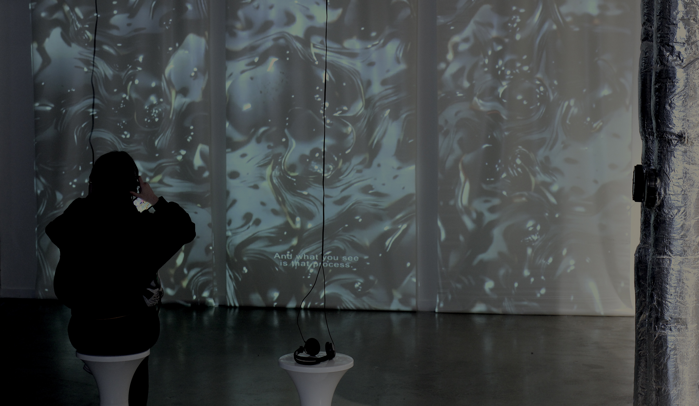
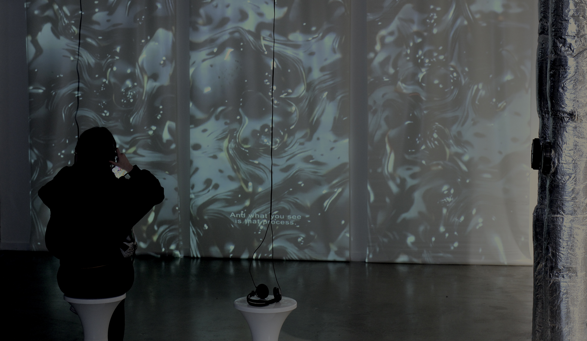

Learning a blind eye, 2021
MA/MFA Computational Arts Degree Show, Goldsmiths, University of London Peckham Digital Festival, Eagle Wharf, London Spectacle for Later: Computational Cinema Festival, Rio Cinema, London Prelude to Space, Stokey Pop Up, London
This film is an attempt to explore and understand how machine learning tools ‘think’ and ‘learn’ and how that impacts what they make. The story has been written intandem with generating the visuals so that the story creates the visuals and the visuals in turn influence the writing of the story.
The visuals in this film were created using a computational architecture comprising two parts: an ‘artist’ (VQGAN), generating thousands of images based on a series of words/phrases (yellow captions), and a ‘critic’ (CLIP) scoring and making selections from these images. Each panel simultaneously presents an alternative interpretation of the same words/phrases.
The artist and critic were trained using the Imagenet model which is made up of millions of images scraped from the internet that were manually annotated and categorised by human workers of Amazon’s Mechanical Turk marketplace earning an average wage of $2USD/hour.
These images are our images; interpreted and re-represented beyond our control or intention in an attempt to organise or map a world of objects. This is a political exercise with the consequence of perpetuating and amplifying cultural prejudices and biases that are enmeshed within the dataset. This system favours universalism over plurality and is already shaping a presentation of our world and transforming the future.
The audio narration was generated using text to speech synthesis of my voice.
This work was featured in the Goldsmiths, University of London MA + MFA Computational Arts Group Exhibition, Shivers, September 2021. During the exhibition, people were invited to participate and generate their own short films by tweeting a story or phrases to @ML_MOVIE. The generated film would then be tweeted back to them.

 
